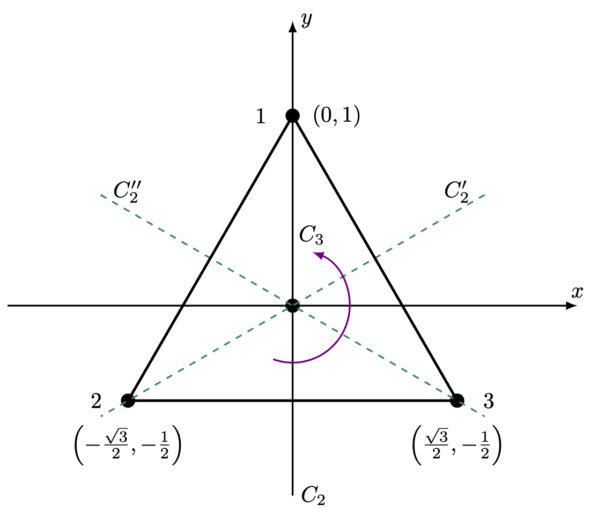
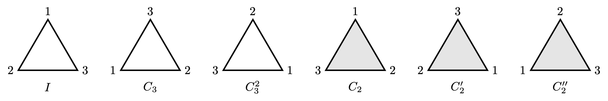
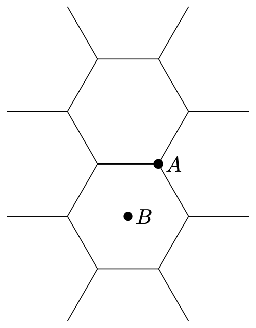
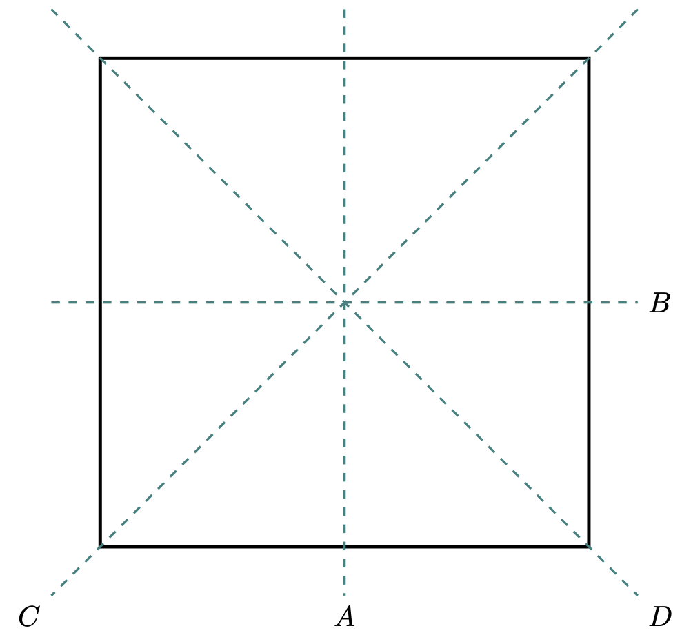

4 군의 기본적인 성질
% %
%
\[ \DeclarePairedDelimiters{\set}{\{}{\}} \DeclareMathOperator*{\argmax}{argmax} \]
4.1 군의 정의와 기본적인 성질 (Group)
4.1.1 군의 정의
군에서의 연산 기호는 \(a\circ b\), \(a \cdot b\), \(ab\), \(a+b\) 처럼 다양한 기호가 사용 될 수 있다. 기호를 생략하는 \(ab\) 와 같은 표기법도 많이 사용된다. 군을 정의할 때 집합과 연산을 묶어 \((G,\, \cdot)\) 와 같은 표기법도 흔히 사용된다.
명제 4.1 \(g,\,x,\,y \in G\) 에 대해 다음이 성립한다.
(\(1\)) \(xg=gy=1_G\) 이면 \(x=y\) 이다.
(\(2\)) \(xg=yg\) 이면 \(x=y\) 이다.
(증명). (\(1\)) \(x=x1_G =x(gy)= (xg)y = 1_Gy = y\).
(\(2\)) \(xg=yg \implies xgg^{-1} = ygg^{-1} \implies x=y.\qquad \square\)
4.1.2 군의 성질
명제 4.2 (부분군 판정법) \(G\) 가 군이고 \(H\) 가 \(G\) 의 부분집합이며 같은 연산이 정의되었다고 하자. 이 때 다음 세 명제는 동치이다.
(\(a\)) \(H\le G\)
(\(b\)) (1) \(\forall a,\,b\in H \implies ab\in H\), (2) \(\forall h\in H,\, h^{-1}\in H\).
(\(c\)) \(\forall a,\,b\in H,\, ab^{-1} \in H\).
(증명). (\(a \implies b\)) \(H\) 가 군이고 따라서 군의 정의에 의해 자명하다.
(\(b \implies c\)) (\(b-2\)) 에 의해 \(b^{-1}\in H\) 이며, (\(b-1\)) 에 의해 \(ab^{-1}\in H\) 이다.
(\(c \implies a\)) 같은 연산이 정의되었으므로 \(H\) 의 원소에 대해 결합규칙이 성립한다. \(aa^{-1}=1_G\in H\) 이다. \(1_Gb^{-1}=b^{-1}\in H\) 이므로 역원이 존재한다. 따라서 \(H\le G\) 이다. \(\square\)
보통 (\(c\)) 를 이용하여 부분집합이 부분군임을 증명한다.
명제 4.3 \(A\) 가 군 \(G\) 의 부분집합일 때 \(\langle A \rangle \le G\) 이다.
(증명). \(\langle A \rangle \subseteq G\) 임은 자명하다. 이제 \(x,\,y \in \langle A \rangle\) 에 대해 \(xy^{-1}\in \langle A \rangle\) 임을 보이면 된다. \(x,\,y\) 는 \(A\) 의 원소와 그 역원의 유한곱이므로 \(y^{-1}\) 역시 그렇고 \(xy^{-1}\) 역시 그렇다. 따라서 \(\langle A \rangle \le G\) 이다. \(\square\)
명제 4.4 군 \(G,\,F\) 에 대해 곱군은 군이다.
(증명). (\(1\)) \(g_1,\,g_2 \in G\), \(f_1,\,f_2\in F\) 에 대해 \((g_1,\,f_1)(g_2,\,f_2)= (g_1g_2,\,f_1f_2)\in G\otimes F\) 이므로 연산에 대해 닫혀 있다.
(\(2\)) \(g\in G,\, f\in F\) 에 대해 \((g,\,f)(1_G,\,1_F)= (1_G,\, 1_F)(g,\,f)=(g,\,f)\) 이므로 \((1_G,\,1_F)\) 는 \(G\otimes F\) 의 항등원이다.
(\(3\)) \(g\in G,\, f\in F\) 에 대해 \((g,\,f)(g^{-1},\,f^{-1}) = (g^{-1},\,f^{-1})(g,\,f)=(1_G,\,1_F)\) 이므로 역원이 존재한다. \(\square\)
4.2 잉여류와 라그랑쥬 정리
앞으로 잉여류로 여려가지를 증명하는데 왼쪽 잉여류를 쓰든 오른쪽 잉여류를 쓰든 상관 없지만 보통 왼쪽 잉여류를 많이 사용한다.
보조정리 4.1 \(H\le G\) 일 때
(\(1\)) \(G\) 가 유한군이면 \(H\) 에 의한 잉여류가 포함하는 원소의 수는 모두 같다.
(\(2\)) \(H\) 에 의한 두 잉여류는 같거나 서로소이다.
(\(3\)) \(G\) 의 모든 원소는 단 하나의 \(H\) 에 의한 잉여류에 포함된다.
(증명). (\(1\)) \(H\) 자체도 잉여류이다. \(gH\) 에 대해 \(gh_1 = gh_2\) 이면 \(h_1=h_2\) 이다. 따라서 모든 잉여류가 포함하는 원소의 갯수는 \(H\) 의 원소의 갯수와 같다.
(\(2\)) \(g_1H\) 와 \(g_2H\) 를 생각하자. \(x\in g_1H \cap g_2H\) 라고 하자. \(x=g_1h_1=g_2h_2\) 인 \(h_1,\,h_2\in H\) 가 존재하며 따라서 \(g_1 = g_2h_2h_1^{-1}\) 이다. 즉 \(h\in H\) 에 대해 \(g_1h=g_2h_2h_1^{-1}h \in g_2H\) 이므로 \(g_1H \subset g_2H\) 이다. 같은 논리로 \(g_2H \subset g_1H\) 임을 보일 수 있다. 즉 \(g_1H\cap g_2H \ne \varnothing\) 이면 \(g_1H=g_2H\) 이다.
(\(3\)) \(g\in G\) 이면 \(g\in gH\) 이다. (\(2\)) 에 의해 모든 잉여류는 같거나 서로소이므로 \(g\) 는 단 하나의 잉여류에만 포함된다. \(\square\)
이로부터 자연스럽게 다음의 결론이 나온다.
정리 4.1 (라그랑쥬 정리) \(G\) 가 유한군이고 \(H\le G\) 이면 \(|H|\) 는 \(|G|\) 를 나눈다.
(증명). \(G\) 의 모든 원소는 어떤 \(H\) 의 잉여류에 포함되며, \(H\) 의 잉여류는 같거나 서로소이다. 따라서 \(H\) 에 의한 잉여류가 \(m\) 개라면 \(m|H| = |G|\) 이다. \(\square\)
4.3 중요한 군
예제 4.1 (대칭군과 치환군) 집합 \(X\) 에 대해 \(X \mapsto X\) 전단사 함수의 집합을 대칭군(symmetric group) 이라고 하고 \(S_X\) 혹은 \(\text{Sym}(X)\) 라고 표기한다. 특별히 \(1\) 부터 \(n\) 까지의 자연수의 집합에 대한 순환군은 \(S_n\) 이라고 표기한다. \(S_X\) 가 함수 합성 연산에 대해 군이라는 것은 쉽게 보일 수 있다. 대칭군의 부분군울 순열군(permutation group) 이라고 하고 순열군의 원소를 순열(permutation) 이라고 한다.
(\(1\)) \(f\in \text{Sym}(X)\) 에서 \(a,\,b\in X\) 에 대해 \(f(a)=b,\, f(b)=a\) 이며 \(x\ne a,\,b\) 일 때 \(f(x)=x\) 인 경우 \(f\) 를 호환(transposition) 이라고 한다.
(\(2\)) 모든 \(\text{Sym}(X)\) 의 원소는 호환의 곱으로 표현 할 수 있다. \(g\in \text{Sym}(X)\) 에 대해 호환의 곱은 유일하지 않고 곱해지는 호환의 갯수도 유일하지 않지만 호환의 갯수가 짝수인지 홀수인지는 불변이다. 함수 \(\text{sgn}: \text{Sym}(X) \to \{1,\,-1\}\) 은 \(\sigma\in \text{Sym}(X)\) 가 짝수개의 호환의 곱일 때 \(\text{sgn}(\sigma)=+1\) 이며 홀수개이면 \(\text{sgn}(\sigma)=-1\) 로 정의되는 함수이다.
(\(3\)) 짝수일 때를 짝순열, 홀수일 때는 홀순열이라고 하며 짝순열의 집합은 \(\text{Sym}(X)\) 의 부분군으로 교대군(alternating group) 이라고 하며 흔히 \(A_X\) 로 표현한다.
예제 4.2 (일반선형군과 특수선형군) 체 \(\mathbb{F}\) 위에서 정의된 \(n\times n\) 행렬의 집합 \(\mathbb{F}^{n \times n}\) 에 속하는 가역행렬의 집합은 행렬의 곱셈 연산에 대해 군이며 이를 일반선형군 (general linear group) 이라고 하고 \(GL_n(\mathbb{F})\) 라고 표기한다. 이 가운데 행렬식이 \(1\) 인 행렬의 집합도 군이며 이를 특수선형군 (special linear group) 이라고 하며 \(SL_n(\mathbb{F})\) 라고 표기한다.
예제 4.3 (직교군과 특수직교군) 실수체 \(\mathbb{R}\) 위에서 정의된 직교행렬, 즉 \(A^TA=AA^T=I\) 을 만족하는 \(n\times n\) 정사각 행렬의 집합은 행렬의 곱 연산에 대해 군이다. 이를 직교군 (orthogonal group) 이라고 하고 \(O(n)\) 으로 표기한다. 직교군의 행렬식은 \(\pm 1\) 인데 이가운데 행렬식이 \(+1\) 인 행렬의 집합은 \(O(n)\) 의 부분군으로 특수직교군 (special orthogonal group) 이라고 하고 \(SO(n)\) 으로 표기한다.
예제 4.4 (유니터리군과 특수유니터리군) 복소수체 \(\mathbb{C}\) 위에서 정의된 직교행렬, 즉 \(A^\dagger A=AA^\dagger=I\) 을 만족하는 \(n\times n\) 정사각 행렬의 집합은 행렬의 곱 연산에 대해 군이다. 이를 유니터리군 (unitary group) 이라고 하고 \(U(n)\) 으로 표기한다. 유니터리군의 행렬식은 \(\pm 1\) 인데 이가운데 행렬식이 \(+1\) 인 행렬의 집합은 \(U(n)\) 의 부분군으로 특수 유니터리군 (special unitary group) 이라고 하고 \(SU(n)\) 으로 표기한다.
예제 4.5 (회전과 특수직교군) \(n\) 차원 유클리드 공간에서의 회전은 \(SO(n)\) 과 같다.
예제 4.6 (\(D_3\), 정삼각형에 대한 대칭 연산)
정삼각형에 대한 대칭 연산은 6개의 원소를 가진 군을 이룬다. 항등 연산 \(E\), 삼각형의 중심에 대한 \(\pi/3\) 만큼의 반시계 방향 회전 \(D\) 와 \(F\)(\(D\) 연산 2번 연속), 각 꼭지점과 맞은편 모서리의 중점을 잇는 직선을 회전축으로 하는 \(\pi/2\) 회전 \(A,\,B,\,C\) (아래 그림을 참고하라.)

정삼각형의 꼭지점 \(1\), \(2\), \(3\) 에 \(D_3\) 의 연산을 수행했을 때의 결과는 아래 그림 그림 4.2 과 같다.

이 연산에 대한 수행 결과를 아래의 표로 정리 할 수 있다. 이런 표를 Caylay table 이라고 한다.
이 군은 여러가지 이름으로 불리지만 대표적으로 \(D_3\) 라고 불린다. \(D\) 는 dihedral 의 두문자이며 보통 주 대칭축에 수직인 평면에 \(\pi\) 회전 대칭축이 있을 때 붙인다. 여기서 주 대칭축은 원점을 우리가 보는 평면에 수직으로 통과하는 축이며, \(A,\,B,\,C\) 축이 주 대칭축과 수직한 \(\pi\) 회전 대칭축이다. .
정리 4.2 (Group rearrangement theorem) 위에서 설명한 Caylay 테이블에서 제목행과 제목열을 제외한 테이블 내용에 대해 각 행과 각 열에서는 모든 군의 원소가 단 한번씩만 나온다.
(증명). see 연습문제 4.12 \(\square\)
예제 4.7 (평면상의 원의 회전)
평면상의 원은 원의 중심에 대한 임의의 각 회전에 대해 대칭이다. 이 연산은 반시계 방향 회전각을 나타내는 변수 \(\varphi \in [0,\, 2\pi)\) 에 대해 \(R(\varphi)\) 로 표현 할 수 있으므로 차수가 1인 연속군이다. 또한 \(R(\varphi)\) 에 대한 역변환은 \(R(2\pi - \varphi)\) 이다.
예제 4.8 (Vierergrouppe)
4 원소로 아래의 연산 규칙을 만족하는 군을 클라인 4원군(Keine 4 group) 혹은 Vierergrouppe 라고 한다. 아래 표현에서 \(e\) 는 항등원이다.
예제 4.9 (로런츠 군) 특수상대성이론에서 \(x\) 축 방향으로 속도 \(v\) 로 상대적으로 움직이는 두 관찰자 각각의 시공간 좌표계는 로런츠 변환으로 연관되어 있다.
\[ \begin{aligned} ct' &= \cosh \varphi ct + \sinh \varphi x, \\[0.3em] x' &= \sinh \varphi ct + \cosh \varphi x, \\[0.3em] y' &= y, \\[0.3em] z' &= z. \end{aligned} \tag{4.1}\]
여기서 \(\varphi\) 를 부스트 각 이라고 하며 \(\tanh \varphi = v/c\) 이다. (즉 \(\cosh \varphi = 1/\sqrt{1-v^2/c^2}\), \(\sinh \varphi = (v/c)\sqrt{1-v^2/c^2}\) 이다.) 변화가 없는 \(y,\,z\) 를 무시하면 로런츠 변환은 다음과 같다.
\[ \begin{bmatrix} c't \\ x'\end{bmatrix} = \begin{bmatrix} \cosh \varphi & \sinh \varphi \\ \sinh\varphi & \cosh \varphi \end{bmatrix}. \tag{4.2}\]
두번째 관찰자가 첫번째 관찰자에 대해 부스트각 \(\varphi_1\) 으로, 세번째 관찰자가 두번째 관찰자에 대해 부스트각 \(\varphi_2\) 로 움직인다면(그리고 모두 다 \(x\) 방향이라고 가정한다면) 첫번째 관찰자와 세번째 관찰자의 로런츠 변환은 \(\varphi_1,\, \varphi_2\) 에 의해 아래와 같이 정해지며 군을 이룬다.
\[ \begin{bmatrix} \cosh \varphi_2 & \sinh \varphi_2 \\ \sinh\varphi_2 & \cosh \varphi_2 \end{bmatrix}\begin{bmatrix} \cosh \varphi_1 & \sinh \varphi_1 \\ \sinh\varphi_1 & \cosh \varphi_1 \end{bmatrix} = \begin{bmatrix} \cosh (\varphi_1+\varphi_2) & \sinh (\varphi_1+\varphi_2) \\ \sinh (\varphi_1+\varphi_2) & \cosh (\varphi_1+\varphi_2) \end{bmatrix} \]
4.4 동형사상과 켤레류
4.4.1 동형사상
예제 4.10 (\(C_4\) 군의 동형사상과 준동형사상.)
정사각형의 중심에 대한 \(0^\circ\), \(90^\circ\), \(180^\circ\), \(270^\circ\) 회전은 군을 이루며 각각 \(I,\,C_4,\,C_2,\,C_4'\) 라고 한다. 즉 \(G_1=\{I,\,C_4,\,C_2,\,C_4'\}\) 이라고 하자. 또한 \(G_2=\{1,\, i,\, -1,\, -i\}\) 는 곱에 대한 군을 이룬다. 이 두 군에 대한 함수 \(\phi : G \to G'\) 를
\[ \phi(I)=1,\quad \phi(C_4)=i,\quad \phi(C_2)=-1,\quad \phi(C_4')=-i \]
로 정의하면 \(\phi\) 는 동형사상이다. 즉 \(\phi \in \text{Iso}(G_1,\,G_2)\) 이다. 또한 이 군은 \(C_4\) 혹은 \(i\) 에 의해 생성되는 순환군이다.
곱 연산으로 정외된 집합 \(G_3=\{1,\,-1\}\) 은 역시 군이며 \(\psi: G_1\to G_3\) 를
\[ \psi (I)= \psi(C_2)=1,\qquad \psi (C_4)=\psi (C_4')= -1 \]
로 정의하면 \(\psi \in \text{Hom}(G_1,\,G_3)\) 이다.
예제 4.11 (\(Z_n\) 과 \(\mathbb{Z}_n\)) Zee (2016) 는 \(Z_n\) 을 \(z^n=1\) 의 모든 복소해의 집합으로 정의하며 이는 곱셈 연산에 대해 군이다. 예를 들어 \(Z_3 = \{1,\,\omega,\,\omega^2\}\).
\(\mathbb{Z}_n=\{0, 1, 2, \ldots, n-1\}\) 은 \(n\) 을 법(mod)으로 하는 덧셈에 대해 닫혀 있는 군이다. \(\phi : Z_n \to \mathbb{Z}_n\) 을 \(\phi(\omega^k) = k\) 로 정의하면 \(\phi\) 는 동형사상이며 따라서 \(Z_n \approx \mathbb{Z}_n\) 이다.
예제 4.12 (\(SO(2)\) 와 \(U(1)\)) \(SO(2)\) 는 2차원 평면에서의 회전 연산의 집합으로 이루어진 군이며 \(U(1) = \{e^{i\theta} : \theta\in \mathbb{R}\}\) 이다. 반식
명제 4.5 \(\phi \in \text{Hom}(G,\,G')\) 일 때 다음이 성립한다.
(\(1\)) \(1_G \in \ker(\phi)\), \(1_{G'} \in \operatorname{im}(\phi)\),
(\(2\)) \(\ker (\varphi) \le G\),
(\(3\)) \(\operatorname{im}(\phi) \le G'\)
(증명). (\(1\)) 각각의 \(g\in G\) 에 대해 \(\phi(g)= \phi(g)\phi(1_G)\) 이므로 \(\phi(1_G)=1_{G'}\) 이다.
(\(2\)) 명제 4.2 을 보자. \(1_G\in \ker (\phi)\) 이며 \(a,\,b\in \ker (\phi)\) 일 때 \(\phi(ab)=\phi(a)\phi(b)=1_{G'}\) 이므로 \(ab\in \ker (\phi)\) 이다. \(a\in \ker (\phi)\) 일 때 \(1_{G'} = \phi(a)\phi(a^{-1})\) 이므로 \(\phi(a^{-1})=1_{G'}\) 이다. 즉 \(a \in \ker (\phi) \implies a^{-1}\in \ker (\phi)\) 이다. 따라서 \(\ker (\phi)\le G\) 이다.
(\(3\)) (\(1\)) 에서 \(1_{G'}\in \phi(G')\) 임을 보였다. \(a',\,b'\in G'\) 이면 \(\phi(a)=a',\, \phi(b)=b'\) 인 \(a,\,b\in G\) 가 존재하며 \(a'b' = \phi(a)\phi(b) = \phi(ab) \in \operatorname{im}(\phi)\) 이다. \(a'\in G'\) 이라면 \(\phi(a)=a'\) 인 \(a\in G\) 가 존재하며 \(a^{-1} \in G\) 이므로 \(\phi(a^{-1})\in G'\) 이다. \(1_{G'}=\phi(aa^{-1}) = \phi(a)\phi(a^{-1})\) 이므로 \(\phi(a^{-1}) = (\phi(a))^{-1} =a'^{-1}\in \operatorname{im}(G)\) 이다. \(\square\)
유한군에 대해 중요한 정리 중의 하나가 케일리 정리(Caylay’s theorem) 이다.
정리 4.3 (Caylay 정리) 유한군 \(G\) 는 \(\text{Sym}(G)\) 의 어떤 부분군과 동형이다.
(증명). \(\phi_g :G \to G\) 를 \(\phi_g(x):= gx\) 로 정의하자. 정리 4.2 에 의해 \(\phi_g\) 는 전단사이므로 \(\phi_g \in \text{Sym}(G)\) 이다. \(\Phi_G = \{\phi_g: g\in G\}\) 는 함수의 합성 연산에 대해 군이라는 것을 보이자. \(\phi_{i_G}\) 는 \(\Phi_G\) 에서의 항등원이며 \(\phi_{g^{-1}}\) 은 \(\phi_g\) 의 역원이다. 또한 함수의 합성의 정의에 의해 \(\phi_{g_1}\circ (\phi_{g_2}\circ \phi_{g_3})= (\phi_{g_1} \circ \phi_{g_2})\circ \phi_{g_3}\) 이다. 따라서 \(\Phi_G \le \text{Sym}(G)\) 이다.
이제 \(G\) 와 \(\Phi(G)\) 가 동형임을 보이자. \(\theta : G \to \Phi_G\) 에 대해 \(\theta(g) := \phi_g\) 라고 하자. 각각의 \(g\in G\) 에 대해
\[ \theta(x)\theta(y)(g) =\phi_x(\phi_y(g))= xyg = \phi_{xy}(g)= \theta(xy)(g) \]
이므로 \(\theta\) 는 준동형사상이다. \(\theta_x = \theta_y\) 이면 모든 \(g\in G\) 에 대해 \(xg = yg\) 이므로 \(x=y\) 이다. 즉 \(\theta\) 는 동형사상이다. \(\square\)
4.4.2 켤레류와 불변부분군
앞으로의 사용을 위헤 군의 부분집합에 관련된 연산을 아래와 같이 정의한다.
정리 4.4 집합 \(X\) 에 어떤 동치관계 \(\sim\) 이 정의되고 \(x\) 에 대한 동치류를 \([x]\) 라고 하자. 집합 \(X\) 는 성분의 동치류들로 분할된다. 즉,
(\(1\)) 모든 \(x\in X\) 는 어떤 동치류에 포함된다.
(\(2\)) \(x,\,y \in X\) 일 때 \([x]\) 와 \([y]\) 는 같거나 서로소이다.
(\(3\)) 따라서 \(X\) 는 서로소인 동치류들의 합집합과 같다.
(증명). (\(1\)) 동치관계의 정의 (\(1\)) 의 해 \(x\sim x\) 이므로 \(x\in [x]\) 이다.
(\(2\)) \(z\in [x]\cap [y]\) 이면 \(x\sim z,\, y \sim z\) 이므로 \(x \sim y\) 이다. 따라서 \([x]=[y]\) 이다.
(\(3\)) 모든 \(x\in X\) 는 어떤 동치류에 포함되며, 각각의 동치류는 서로소이거나 동일하므로 \(X\) 는 서로소인 동치류들의 합집합과 같다. \(\square\)
정리 4.5 군 \(G\) 를 생각하자. \(a,\,b\in G\) 가 켤레인 것은 동치관계이다.
(증명). 정의 4.9 를 생각하자. \(a,\,b\in G\) 가 어떤 \(g\in G\) 에 대해 \(a=gbg^{-1}\) 일 때 \(a \sim b\) 라고 하자. \(a=aaa^{-1}\) 이므로 \(a\sim a\) 이다. \(a=gbg^{-1}\) 이면 \(b=g^{-1}a(g^{-1})^{-1}\) 이므로 \(a\sim b \implies b \sim a\) 이다. \(a\sim b,\, b\sim c\) 이면 \(a=gbg^{-1},\, b=g'cg'^{-1}\) 이며 따라서 \(a=(gg')c(gg')^{-1}\) 이므로 \(a\sim c\) 이다. \(\square\)
집합 \(A\) 와 \(A\) 의 부분집합 \(A_1,\,A_2,\ldots\) 에 대해 \(A=\bigcup A_i\) 이고 \(i\ne j\implies A_i\cap A_j=\varnothing\) 일 때 \(A_1,\,A_2,\ldots\) 가 \(A\) 를 분할한다고 한다. 정리 4.5 로부터 다음 결론은 자연스럽다.
따름정리 4.1 군 \(G\) 는 켤레 관계에 의해 분할된다.
명제 4.6 군 \(G\) 에 대해 다음이 성립한다.
(\(1\)) 항등원 \(i_G\) 에 대해 \(E=\{i_G\}\) 는 켤레류이다.
(\(2\)) \(G\) 가 아벨군이면 모든 \(g\in G\) 에 대해 \(\{g\}\) 는 켤레류이다.
(\(3\)) \(g\in G,\, H\le G\) 일 때 \(gHg^{-1} = \{ghg^{-1}: h\in H\}\) 는 \(G\) 의 부분군이다.
(\(4\)) \(K\) 가 \(G\) 의 켤레류 일 때 \(\overline{K} = \{g^{-1}: g\in K\}\) 도 켤레류이다.
(증명). (\(1\)), (\(2\)) 는 자명하며 (\(3\)) 은 연습문제 4.13 로 넘긴다.
(\(4\)) \(g\in K\) 이면 \(g^{-1}\in \overline{K}\) 이다. \((xgx^{-1})^{-1}=xg^{-1}x^{-1}\) 이므로 \(g' \sim g \implies g'^{-1} \sim g^{-1}\) 이다. 따라서 \(\overline{K}\) 도 켤레류이다. \(\square\)
예제 4.13 (\(D_3\) 군의 켤레류) 예제 4.6 의 Caylay table 을 이용하여 \(D_3\) 의 켤레류를 구해보자. 우선 \(\{E\}\) 는 켤레류이다. \(A,\,B,\,C\) 는 각각 스스로의 역원이며 \(D,\,F\) 는 서로간의 역원이다. \(ABA^{-1}=ABA=C\) 이므로 \(B\sim C\) 이다. \(BAB^{-1}=A\) 이므로 \(A\sim C\) 이다. 이것을 반복해보면 \(\{A,\,B,\,C\}\) 가 켤레류 임을 알 수 있다. 또한 \(AFA^{-1}=D\) 이므로 \(F\sim D\) 임을 알 수 있다. 즉 \(D_3\) 군에는 아래와 같은 \(3\) 개의 켤레류가 존재한다.
\[ \{E\},\qquad \{A,\,B,\,C\},\qquad \{D,\,F\}. \]
다음은 정규분분군에 대한 중요한 동치관계이다.
정리 4.6 군 \(G\) 의 부분군 \(N\) 에 대해 다음은 동치이다.
(\(1\)) 각각의 \(g\in G\) 에 대해 \(gNg^{-1} \subseteq N\) 이다.
(\(2\)) 각각의 \(g\in G\) 에 대해 \(gNg^{-1} = N\) 이다.
(\(3\)) 각각의 \(g\in G\) 에 대해 \(gN = Ng\) 이다.
(증명). (\(1 \implies 2\)) \(gNg^{-1} \subseteq N\) 이므로 \(N \subseteq gNg^{-1}\) 임을 보이면 된다. \(n\in N\) 에 대해 \(g^{-1}ng = n'\) 인 \(N'\in N\) 이 존재하며 따라서 \(n=gn'g^{-1}\in gNg^{-1}\) 이다. 즉 \(N \subseteq gNg^{-1}\) 이다.
(\(2 \implies 3\)) \(x\in gN\) 이면 어떤 \(n\in N\) 에 대해 \(x=gn\) 이며 \(x=gn=\left(gng^{-1}\right)g \in Ng\) 이므로 \(gn\subset Ng\) 이다. 같은 방법으로 \(Ng\subset gN\) 임을 보일 수 있으며 따라서 \(gN=Ng\) 이다.
(\(3\implies 1\)) \(n\in N\) 에 대해 \(gn=n'g\) 를 만족하는 \(n'\in N\) 이 존재한다. 따라서 \(gng^{-1}\in N\) 이므로 \(gNg^{-1}\subseteq N\) 이다. \(\square\)
명제 4.7 \(N \trianglelefteq G\) 일 때 임의의 \(x,\, y\in G\) 에 대해 \(xNyN = xyN\) 이다.
(증명). \(xn_1yn_2 = xy(y^{-1}n_1y)n_2\) 이며 \(y^{-1}n_1y =n_1'\in N\) 이므로 \(xn_1yn_2 = xyn_1'n_2 \in xyN\) 이다. 즉 \(xNyN \subset xyN\) 이다. 또한 \(1_G\in N\) 이므로 \(xyn=x1_Gyn \in xNyN\) 이다. 즉 \(xyN\subset xNyN\) 이다. \(\square\)
예제 4.14 (교대군) 교대군 \(A_n\) 은 짝수개의 호환의 곱으로 표현되며 따라서 교대군 \(S_n\) 의 불변 부분군이다.
예제 4.15 (불변부분군의 곱군) \(E\trianglelefteq G,\, F\trianglelefteq H\) 일 때 \(E\otimes F \trianglelefteq G \otimes H\) 이다.
예제 4.16 (Viergrouppe 와 \(A_4\)) 교대군 \(A_4\) 는 다음과 같다.
\[ A_4 = \left\{\begin{array}{l} I,\,(123),\, (124),\, (132),\, (134), (142),\, (143),\, (234),\, (243)\\[0.3em] (12)(34),\, (13)(24),\, (14)(23) \end{array}\right \} \tag{4.5}\]
여기서
\[ \{I,\,(12)(34),\, (13)(24),\, (14)(23)\} \]
는 Viergrouppe (예제 4.8) 와 동형이며 \(A_4\) 의 정규부분군이다. 또한 \(A_4\) 의 켤레류는 다음과 같다.
\[ \begin{aligned} &\{I\}, \\[0.3em] &\{(12)(34),\, (13)(24),\, (14)(23)\}, \\[0.3em] &\{(123),\, (142),\, (134),\, (243)\}, \\[0.3em] &\{(132),\, (124),\, (143),\, (234)\}. \end{aligned} \]
예제 4.17 (유도 부분군/교환자 부분군) 군 \(G\) 에 대해 \(A=\{a^{-1}b^{-1}ab : a,\,b\in G\}\) 에 의한 생성 부분군 \(\langle A \rangle\) 을 \(G\) 에 대한 유도 부분군 (derived subgroup) 혹은 교환자 부분군 (commutator subgroup) 이라고 한다. 명제 4.3 에 의해 \(\langle A \rangle \le G\) 이다. 이제 \(\langle A \rangle \trianglelefteq G\) 임을 보이자. 정해진 \(a,\,b\in G\) 와 임의의 \(g\in G\) 에 대해
\[ g^{-1}(a^{-1}b^{-1}ab)g = (g^{-1}a^{-1}g) (g^{-1}b^{-1} g) (g^{-1}a g) (g^{-1}b g) \]
이며 \(\overline{a} = g^{-1}a g,\, \overline{b} = g^{-1}b g\) 라고 하면 \(\overline{a},\,\overline{b}\in G\) 이며
\[ g^{-1}(a^{-1}b^{-1}ab)g = \overline{a}^{-1}\overline{b}^{-1}\overline{a}\overline{b} \in \langle A \rangle \]
이다. \(a_1,\ldots,\,a_n \in A\) 와 \(\epsilon_1,\ldots,\,\epsilon_n \in \{\pm 1\}\) 에 대해 \(g\in G\) 일 때 \(g^{-1}a_ig\in G\) 라면
\[ g^{-1}(a_1^{\epsilon_1}\cdots a_n^{\epsilon_n})g^{-1} = (g^{-1}a_1g)^{\epsilon_1} \cdots (g^{-1}a_ng)^{\epsilon_n} \in \langle A \rangle \]
이다. 즉 \(\langle A \rangle \trianglelefteq G\) 이다.
정리 4.7 \(\phi \in \text{Hom}(G,\,G')\) 일 때 \(\ker (\phi) \trianglelefteq G\) 이다.
(증명). \(K = \ker(\phi),\, g\in G\) 라고 하자. \(k\in K\) 에 대해 \(\phi(gkg^{-1})=1_{G'}\) 이므로 \(gKg^{-1}\subseteq K\) 이다. 따라서 정의 4.12 에 따라 \(\ker (\phi )\trianglelefteq G\) 이다. \(\square\)
4.4.3 몫군
\(N \trianglelefteq G\) 일 때 \(l=|G|/|N|\) 개의 \(N\) 의 왼쪽 잉여류가 존재하며 이 잉여류 집합을 \(X_G=\{N,\, g_1N,\ldots,\, g_{l-1}N\}\) 라고 쓸 수 있다. 명제 4.7 에 의해 \((g_iN)(g_jN)= g_ig_jN\) 인 연산을 정의 할 수 있으며 이 때 \(N\) 은 항등원 역할을 한다. \((g_iN)(g_i^{-1}N)=N\) 이므로 \(g_iN\) 에 대한 역원도 존재한다. 또한
\[ (g_iN)[(g_jN)(g_kN)] = (g_iN)(g_jg_kN)=g_ig_jg_kN = [(g_iN)(g_jN)](g_kN) \]
이므로 연산의 결합법칙도 성립한다. 즉 \(X_G\) 는 군이며 \(G/N\) 으로 표기한다.
몫군에서 정규부분군 \(N\) 은 나눗셈의 제수(divisor) 역할을 수행한다고 볼 수 있다. 이런 이유로 정규부분군을 normal divisor 라고 부르기도 한다.
정리 4.8 군 \(G\) 와 불변부분군 \(N \trianglelefteq G\) 이 주어졌을 때 \(N\) 을 kernel 로 하는 준동형사상이 존재한다.
(증명). \(\pi : G \to G/N\) 을 \(\pi (g) := gN\) 로 정의하자. \(\pi(g_1g_2)= g_1g_2N = g_1Ng_2N = \pi(g_1)\pi(g_2)\) 이므로 \(\pi \in \text{Hom}(G,\,G/N)\) 이며 \(\ker (\pi)=N\) 이다. \(\square\)
4.4.4 여러가지 군
예제 4.18 (정이면체군 \(D_n\)) 정이면체군 \(D_n\) 은 정 \(n\)-각형의 대칭군이다. \(2\pi/n\) 만큼의 회전 \(R\) 과 반사 \(r\) 에 의해 생성된다. 반사는 \(n\) 이 홀수일때는 한 꼭지점과 이 꼭지점과 마주보는 모서리의 중심을 지나는 직선에 대한 반사이며 \(n\) 이 짝수일때는 마주모는 꼭지점을 잇는 직선에 대한 반사와 마주보는 모서리 각각의 중앙을 잇는 직선에 대한 반사이다. \(0^\circ\) 회전을 포함하여 \(n\) 개의 회전과 \(n\) 개의 반사가 존재한다. 이 군의 항등원을 \(I\) 라고 하면 \(R^n = r^2 = I\) 이다. \(D_n\) 에서 \(rRr=R\), 즉 \(Rr= rR^{-1}\) 이며 따라서 아래와 같이 \(2n\) 개의 성분을 가진다.
\[ D_n = \{I,\,R,\ldots,\,R^{n-1},\, r,\,Rr,\ldots,\,R^{n-1}r\} \]
예제 4.19 (사원수군 \(\mathcal{Q}\)) 해밀토는 2차원에서의 복소평면을 일반화하여 다음과 같은 규칙을 갖는 사원수 규칙을 만들었다.
\[ i^2=j^2=k^2=-1,\qquad ij=-ji = k,\, jk=-kj = i,\, ki=-ik = j. \]
이 규칙에 대해
\[ \mathcal{Q} = \{\pm 1,\, \pm i,\, \pm j,\, \pm k\} \]
는 군을 이루며 이를 사원수군(quatenionic group) 이라고 한다.
예제 4.20 (콕서터 군) \(A=\{a_1,\ldots,\,a_k\}\) 에 대해 \(a_i^2=1\) 이며 \((a_ia_j)^{n_{ij}}=1\) 인 \(n_{ij}\ge 2\) 가 항상 존재한다고 하자. 이 때 \(A\) 에 의해 생성되는 군을 콕서터 군이라고 한다. 콕서터 군에서 \(n_{ij}=n_{ji}\) 임을 보이자. 우선 \((ab)^n=1\) 일 때
\[ 1 = b^2 = b(ab)^nb = baba\cdots ba = (ba)^nb^2=(ba)^n \]
4.4.5 Class 곱
\(G\) 의 켤레류의 집합 \(\mathcal{K}_G=\{K_1,\ldots,\,K_m\}\) 를 생각하자. \(g\in G\) 에 대해
\[ gK_i g^{-1}= K_i \]
임은 쉽게 알 수 있다. 그렇다면 두 클래스의 곱은 어떻게 될까? \(X=K_iK_j\) 라고 하면
\[ g X g^{-1} = g K_i K_jg^{-1} = gK_ig^{-1}gK_jg^{-1}= K_iK_j = X \]
이로 \(K_iK_j\) 는 켤레 작용에 대해 닫혀 있다. 즉 \(K_iK_j\) 는 어떤 켤레류들의 합집합이다. 여기서 우리는 중요한 정리를 언급하고자 한다. 이 명제는 동일한 명제인 명제 12.4 의 증명을 참고하라.
정리 4.9 \(K_i,\,K_j\) 가 유한군 \(G\) 의 켤레류일 때 \(K_iK_j\) 는 컬레류의 합집합이며 반복 횟수를 포함한다면
\[ K_iK_j = \sum_k c_{ijk}K_k \tag{4.6}\]
와 같이 쓸 수 있다.
위 식은 \(K_iK_j\) 를 계산 했을 때 \(K_k\) 가 몇번 등장하는지를 표기하는 식이며 \(2K_1+3K_2\) 라면 \(K_1\) 이 \(2\) 번 \(K_3\) 가 \(3\) 회 등장한다는 뜻이다. 아래의 예를 보고 더 정확히 알아보자.
4.5 군의 작용
4.5.1 군의 작용
군의 작용에는 아래와 같이 동등한 정의가 존재한다.
정리 4.10 \(\phi\in \text{Hom}(G,\,\text{Sym}(S))\) 은 군의 작용이다. 또한 \(G\) 에서 \(S\) 로의 군의 작용은 \(\text{Hom}(G,\,\text{Sym}(S))\) 에 속한다. 즉 \(\phi\in \text{Hom}(G,\,\text{Sym}(S))\) 는 정의 4.15 와 동등한 정의이다.
(증명). 준 동형사상의 정의에 의해 \(\phi\) 는 군의 작용이다. 임의의 \(g\in G\) 에 대해 \(\pi_g(s_1)=\pi_g(s_2)\) 이면 \(s_1=s_2\) 이므로 \(\pi\) 는 단사이며 따라서 \(\pi\in \text{Hom}(G,\,\text{Sym}(S))\) 이다. 즉 두 정의는 동등하다. \(\square\)
따름정리 4.2 \(\pi\) 가 군 \(G\) 의 \(S\) 로의 작용일 때 \(\pi_g : S \to S\) 는 단사이다.
예제 4.22 (자기 자신에 대한 작용) 군은 자기 자신에 작용할 수 있다.
(\(1\)) (translation) 정해진 \(x\in G\) 에 대해 \(\pi_x(g)=xg\) 는 \(G\) 에 대한 \(G\) 의 작용이다.
(\(2\)) (conjugation) 정해진 \(y\in G\) 에 대해 \(\pi_y(g) = ygy^{-1}\) 은 \(G\) 에 대한 \(G\) 의 작용이다.
예제 4.23 (일반선형군에서의 군의 작용)
(\(1\)) \(A\in \text{GL}(n)\) 는 \(\mathbb{R}^n \mapsto \mathbb{R}^n\) 전단사 함수 임이 알려져 있다. 또한 \(v\in \mathbb{R}^n\) 에 대해 \(I_n v = v\) 이며 \(A,\,B\in \text{GL}(n)\) 에 대해 \(A(Bv)= (AB)v\) 이므로 \(A\in \text{GL}(n)\) 은 \(GL(n)\) 의 \(\mathbb{R}^n\) 에 대한 작용이다.
(\(2\)) \(M\in \text{GL}(n)\) 에 대해 \(\pi_M : LN(n) \to LN(n)\) 을 \(\pi_M(X) = MXM^{-1}\) 로 정의하면 \(\pi_M\) 이 \(LN(n)\) 의 \(LN(n)\) 에 대한 작용임을 알 수 있다.
예제 4.24 (잉여류에의 작용) 군 \(G\) 와 \(H\le G\) 에 \(\pi_g (aH)=gaH\) 는 \(G\) 에서 \(H\) 에 대한 왼쪽 잉여류로의 작용이다.
4.5.2 안정부분군과 궤도
명제 4.8 식 4.7 의 \(G_s\) 는 \(G\) 의 부분군이다.
(증명). \(x,\,y\in G_s\) 이면 \(xs=ys=s\) 이다. \(ys=s\) 에 \(y^{-1}\) 을 작용하면 \(y^{-1}s=s\) 이다. 따라서 \(xy^{-1}s=s\) 이므로 \(G_s \le G\) 이다. \(\square\)
명제 4.9 군 \(G\) 가 \(S\) 에 대한 작용이라고 하자. \(s,\,s'\in S,\, y\in G\) 에 대해 \(s'=ys\) 이면 \(G_{s'}=yG_sy^{-1}\) 이다.
(증명). \[ \begin{aligned} x\in G_{s'} & \iff xs'=s' \iff xys = ys \iff y^{-1}xys = s \iff y^{-1}xy \in G_s \\[0.3em] &\iff x\in yG_sy^{-1}.\qquad \square \end{aligned} \]
명제 4.10 \(\pi\) 가 \(S\) 에 대한 \(G\) 의 작용이라고 할 때
\[ K := \{g\in G : \forall s\in S\, \pi_g(s)=s\} \]
라고 하면 \[ K = \bigcap_{s\in G} G_s \]
이다.
(증명). trivial.
정리 4.11 (궤도-안정부분군 정리) 유한군 \(G\) 가 유한집합 \(S\) 에 작용하며 \(s\in S\) 일 때 \(|G| = |\text{Orb}_G(s)||G_s|\) 이다.
(증명). \(G_S\le G\) 이므로 \(G_s\) 에 의한 왼쪽 잉여류의 집합 \(Y\) 를 정의 할 수 있다. 이제 \(\Phi: Y\to \text{Orb}_G(s)\) 를 다음과 같이 정의하자.
\[ \Phi (gG_s) := \pi_g(s). \]
위 함수가 잘 정의됨을 보이자. 즉 \(gG_s = xG_s\) 이면 \(x^{-1}g\in G_s\) 이므로 \(\pi_{x^{-1}g}(s)=s\) 이며 따라서 \(\pi_g(s) = \pi_x(s)\) 이다.
이제 이 함수가 단사임을 보이자. \(\pi_g(s) = \pi_x(s)\) 이면 \(x^{-1}g\in G_s\) 이며 따라서 \(gG_s = xG_s\) 이다.
이제 이 함수가 전사임을 보이자. \(t\in \text{Orb}_G(s)\) 이면 어떤 \(g\in G\) 에 대해 \(t=\pi_g(s)\) 이므로 이 \(g\) 에 대해 \(\Phi(gG_s) = t\) 이다. 이 함수가 전단사이므로
\[ |\text{Orb}_G(s)| = |Y| = |G|/|G_s|. \qquad \square \]
우리는 예제 4.22 로부터 conjugation 이 군 \(G\) 의 자신에 대한 작용임을 보았다. \(g\in G\) 에 대한 conjugate 작용의 궤도는 \(g\) 와 동등한 켤레류 이므로 다음의 결론을 얻는다.
따름정리 4.3 \(K\) 가 유한군 \(G\) 의 켤레류이면 \(|K|{\big |} |G|\) 이다.
연습문제
연습문제 4.1 (Zee 1.2.2) \(n\ge 3\) 에 대해 \(A_n\) 은 3-cycle 에 의해 생성됨을 보여라. 즉 \(A_n\) 의 모든 성분은 3-cycle 의 곱으로 표현된다.
(해답). \(a,\,b,\,c,\,d\) 는 모두 다르다고 하자. \((a\,b)(a\,c) = (a\,c\,b)\) 이며 $(a,b)(c,d)=(a,b,c)(b,c,d) $ 이다. 즉 모든 두 호환의 곱은 3-cycle 의 곱으로 표현된다. 교대군은 짝수개의 호한의 곱이므로 3-cycle 의 곱으로 표현된다.
연습문제 4.2 \(|S_n|=n!\) 이며 \(|A_n|=n!/2\) 임을 보여라.
(해답). \(S_n\) 은 \(1\) 부터 \(n\) 까지를 순서대로 한번씩 배치한는 방법이므로 \(|S_n|=n!\) 이다. \(A_n\triangleleft S_n\) 이다(예제 4.14). 예제 4.1 의 \(\text{sgn} : S_n \to \{\pm 1\}\) 함수는 준동형 사상이며 \(\ker(\text{sgn})= A_n\) 임을 쉽게 보일 수 있다.
\(S_n\) 은 홀치환과 짝치환으로 분할된다. 홀치환을 \(X_n\) 라고 하자. 임의의 고정된 호횐 \(\sigma \in S_n\) 에 대해 \(\phi: A_n \to X_n\) 을 \(\phi (x)= \sigma x\) 로 정의하자. \(\sigma x_1 = \sigma x_2 \implies x_1 = x_2\) 이므로 \(\phi\) 는 단사이다. 임의의 \(y\in X_n\) 에 대해 \(\sigma y\in A_n\) 이며 \(\sigma^2 y = y\) 이므로 \(\phi\) 는 전사이다. 다라서 \(|A_n| = |X_n|\) 이며 \(|S_n| = |A_n|+|X_n|=2|A_n|\) 이다.
연습문제 4.3 (Zee 1.2.3) \(S_n\) 이 \(A_{n+2}\) 의 어떤 부분집합과 동형임을 보여라.
(해답). \(\sigma = (n+1, n+2)\in S_{n+2}\) 에 대해 \(\phi:S_n \to A_{n+2}\) 를 다음과 같이 정의한다.
\[ \phi (x) = \left\{\begin{array}{ll} x, &\text{where } x\in A_n, \\ \sigma x,\qquad &\text{where } x\notin A_n. \end{array}\right. \]
\(\sigma \notin S_n\) 이므로 \(\sigma x = x\sigma\) 이며 이를 이용하면 \(\sigma \in \text{Hom}(S_n,\, A_{n+2})\) 임을 보일 수 있다. 또한 \(\phi\) 는 단사이므로 \(S_n \approx \text{im}(\phi)\) 이며 \(\text{im}(\phi)\le A_{n+2}\) 이다.
연습문제 4.4 (Zee 1.2.8) \(A_4\) 가 단순군이 아님을 보여라.
(해답). \[ A_4 = \left\{\begin{array}{l} I,\\ (1\,2)(1\,3),\, (1\,2)(1\,4),\, (1\,3)(1\,4),\, (2\,3)(2\,4), \\ (1\,2)(2\,3),\, (1\,2)(2\,4),\, (1\,3)(3\,4),\, (2\,3)(3\,4), \\ (1\,2)(3\,4),\, (1\,3)(2\,4),\, (1\,4)(2\,3) \end{array}\right \} \]
이며 \(\{I,\, (1\,2)(3\,4),\, (1\,3)(2\,4),\, (1\,4)(2\,3)\}\) 는 \(A_4\) 의 진불변 부분군이다.
연습문제 4.5 (Zee 1.2.12) 군 \(G\) 에서 \(f,\,g\in G\) 일 때 일반적으로 \(fg\ne gf\) 이다. 하지만 \(fg \sim gf\) 임을 보여라.
(해답). \(fg = g^{-1}(gf)g\)
연습문제 4.6 (Zee 1.1.13) \(G\) 가 차수가 짝수인 유한군일 때 항등원이 아니면서 제곱하면 항등원이 되는 원소를 항상 포함함을 보여라.
(해답). \(x^2\ne 1_G\) 이면 \(x\ne x^{-1}\) 이다. \(G\) 가 군이므로 \(x,\, x^{-1}\) 짝은 항상 \(G\) 에 포함되어야 한다. 만약 제곱하여 향등원이 되는 \(1_G\) 뿐이라면 \(G\) 의 차수는 홀수이어야 한다. 이로부터 홀수 차수의 유한군은 항등원을 제외하고 제곱하여 항등원이 되는 원소를 항상 홀수개 가져야 한다는 것을 알 수 있다.
연습문제 4.7 (Zee 1.1.16) 콕서터 군(예제 4.20) 에서 \(n_{ij}=2\) 이며 \(a_ia_j=a_ja_i\) 임을 보여라.
(해답). 콕서터 군의 정의에 의해 \(a_i^2 = a_j^2=1\) 이다. 즉 \(a_i^{-1}=a_i\) 이다. \((a_ia_j)^2=a_ia_ja_ia_j=1\) 이며 각 변의 왼쪽에 \(a_i\) 오른쪽에 \(a_j\) 를 곱하면 \(a_ja_i=a_ia_j\).
연습문제 4.8 (Zee 1.1.18)
일반적으로, 군 \(H\) 는 더 큰 군 \(G\) 에 여러 방식으로 부분군으로 embedding 될 수 있다. 예를 들어 \(A_4\) 는 \(A_4 \subset S_4 \subset S_5 \subset S_6\) 경로를 따라 자연스럽게 \(S_6\) 에 embedding될 수 있다. \(A_4\) 를 \(S_6\) 에 embedding 하는 다른 방법을 찾아보라. 힌트: 기하학을 생각하라!
(해답). \(A_4\) 는 정 4면체의 회전과 동형이며 정 4면체는 4개의 꼭지점과 6개의 변으로 이루어져 있다. 정 4 면체의 꼭지점을 각각 \(1,\,2,\,3,\,4\) 라고 하고 변 \(l_i\) 를
\[ l_1 = \overline{12},\quad l_2 = \overline{13},\quad l_3=\overline{14},\quad l_4 = \overline{23},\quad l_5=\overline{24},\quad l_6 = \overline{34} \]
라고 하자. 4면를 회전시키는 것은 변을 치환하게 되므로 \(\sigma\in A_4\) 와 \(\tau \in S_6\) 사이에 관계를 갖게 된다. 이것을 \(\rho : A_4 \to S_6\) 라고 하자.
\(A_4\) 는 식 4.5 이며 \(\rho (I)\) 를 제외한 연산 결과는 다음과 같다.
\[ \begin{aligned} \rho ((123)) &= (142)(356), \\[0.3em] \rho ((124)) &= (153)(245), \\[0.3em] \rho ((132)) &= (124)(365), \\[0.3em] \rho ((134)) &= (145)(263), \\[0.3em] \rho ((142)) &= (135)(264), \\[0.3em] \rho ((143)) &= (154)(236), \\[0.3em] \rho ((234)) &= (123)(465), \\[0.3em] \rho ((243)) &= (132)(456), \\[0.3em] \rho ((12)(34)) &= (25)(34), \\[0.3em] \rho ((13)(24)) &= (16)(34), \\[0.3em] \rho ((14)(23)) &= (16)(25). \\[0.3em] \end{aligned} \]
실제로 \(\rho\) 가 하는 것은 \(A_4\) 를 정사면체에 작용하는 것이고 변은 변환된 꼭지점에 대해 정해진다. 즉 군의 작용으로 \(\rho \in \text{Hom}(A_4,\, S_6)\) 이며 \(\ker \rho = \{I\}\) 이므로 단사이다.
여담으로 예제 4.16 에서 언급했듯이 \(A_4\) 는 Viergrouppe 와 동형인 정규부분군을 가진다.
연습문제 4.9 (Zee 1.2.19) \(A_n\) 이 \(S_n\) 의 유도 부분군(예제 4.17) 임을 보여라.
(증명). \(S_n\) 의 유도부분군은 \(X=\{a^{-1}b^{-1}ab : a,\,b\in S_n\}\) 에 의해 생성되는 군이다. 여기서 \(a\,\,b\) 가 홀순열이든 짝순열이든 \(a^{-1}b^{-1}ab\) 는 짝순열이므로 \(\langle X\rangle\) 은 \(A_n\) 의 부분군이다. 이제 \(A_n \subset \langle X \rangle\) 임을 보이면 된다. 연습문제 4.1 에 의해 \(A_n\) 은 3-circle 에 의해 생성된다. 이 때
\[ (a\,b\,c) = (a\,b)(a\,c)(a\,b)^{-1}(a\,c)^{-1} \]
이다. 즉 \(A_n \subset \langle X\rangle\) 이다. 따라서 \(A_n\) 은 \(S_n\) 의 유도부분군이다.
연습문제 4.10 (Zee 1.2.20) 실변수 \(x\) 에 대한 실함수의 집합에서 두 함수의 연산을 함수의 합성으로 정의한다면 군을 정의 할 수 있다. 즉 \((fg)(x) = f(g(x))\). 함수 \(I(x) = x,\, A(x) = (1-x)^{-1}\) 은 차수 3 인 군을 정의함을 보여라. 여기에 \(C(x) = x^{-1}\) 포함시키면 차수 6인 군을 생성함을 보여라.
(증명). \(B(x) = (AA)(x)\) 라고 하자. \[ B(x) = \dfrac{1}{1-1/(1-x)}= \dfrac{x-1}{x},\quad AB(x) =BA(x) = I(x) \]
이므로 \(\{I,\,A,\,B\}\) 는 군이다.
\(C(x) = 1/x\) 를 포함시키면
\[ (AC)(x) =(CB)(x) = \dfrac{x}{x-1},\quad (CA)(x) = (BC)(x) = 1-x,\qquad,\, CC(x) =I(x) \]
이므로 \(\left\{I,\, 1-x,\, (x-1)/x,\, 1/x,\, x/(x-1),\, 1-x \right\}\) 로 이루어진 군이다.
연습문제 4.11 (Arfken 17.1.1) 예제 4.8 의 vierergrouppe 가 순환군인지 아벨군인지 여부를 확인하라.
(해답). \(a^2=b^2 = (ab)^2 = e\) 이므로 순환군이 아니다. \(a(ab)=b,\, (ab)a = a\) 이므로 아벨군도 아니다.
연습문제 4.12 (Arfken 17.1.3 (Rearrangement theorem)) 군 \(\{e,\,a,\,b,\,\ldots,\,n\}\) 에 대해 \(\{ae,\, aa,\, ab,\,ac,\,\ldots,\,an\}\) 은 군의 모든 원소를 각각 한번씩마나 포함한다는 것을 보여라.
(해답). \(ax=ay\) 이면 \(a\) 의 역원 \(a^{-1}\) 을 각 항의 오른쪽에 연산하면 \(x=y\) 이다. 즉 \(x\ne y \implies ax = ay\) 이다.
연습문제 4.13 (Arfken 17.1.4)
명제 4.6 (\(3\)) 를 증명하라.
(해답). \(e\in H\) 이며 \(xex^{-1}=e\in gHg^{-1}\) 이다. \(h_1,\,h_2\in H\) 에 대해 \((gh_1g^{-1})(gh_2g^{-1})=g(h_1h_2)g^{-1} \in gHg^{-1}\) 이다. \(gHg^{-1}\subset G\) 이므로 associativity 는 당연히 성립한다. 따라서 \(gHg^{-1}\le G\) 이다.
연습문제 4.14 (Arfken 17.1.6) \(\boldsymbol{r}=(la,\,ma,\,na)\) 에 동일한 원자가 위치한 정육면체 결정을 생각하자. 여기서 \(l,\,m,\,n\) 은 정수이다.
(\(a\)) 각각의 데카르트 축은 4중 대칭축(4-fold symmetric axis)임을 보여라.
(\(b\)) 정육면 점군(point group) 은 정육면체를 유지하며 \(l=m=n=0\) 에 위치한 원자를 이동시키지 않는 모든 연산(rotation, reflection, inversion)으로 이루어져 있다. 양과 음의 좌표축의 permutation 을 생각하여 정육면 점군이 얼마나 많은 원소로 이루어졌는지 알아보라.
(해답). (\(a\)) \(0,\, \pi/2,\, \pi,\, 3\pi/2\) 회전에 대해 대칭이다.
(\(b\)) 결국은 \(\boldsymbol{a}_1=(a,\,0,\,0),\, \boldsymbol{a}_2=(0,,a,\,0),\, \boldsymbol{a}_3=(0,\,a,\,0)\) 이 각각 \((\pm a,\, 0,\, 0)\), \((0,\, \pm a,\,0)\), \((0,\, 0,\, \pm a)\) 로 변환되는 변환의 갯수를 찾는 것이다. 단 이 변환을 \(P\) 라고 하면 \(P(\boldsymbol{a}_i)\boldsymbol{\cdot }P(\boldsymbol{a}_j) = \delta_{ij}a^2\) 가 되야 한다. 일종의 Permutation 으로 \(6\times 4 \times 2= 48\) 이다.
연습문제 4.15 (Arfken 17.1.7)

위의 그림과 같이 정육각형으로 덮인 평면을 생각하자.
(\(a\)) 세 정육면체가 만나는 점 (\(A\)) 를 통과하며 평면에 수직인 축에 대한 회전 대칭을 결정하라. 즉 이 축이 \(n\)-fold 대칭성을 갖는다면 \(n\) 은 무엇인가?
(\(b\)) 정육면체의 중심 \((B)\) 를 수직으로 통과하는 축에 대해 (\(a\)) 를 반복하라.
(\(c\)) 정육면체의 평면에 포함되는 다른 종류의, 180\(^\circ\) 회전 대칭을 가진 축을 모두 찾아라.
(해답). (\(a\)) 3 fold
(\(b\)) 6 fold
(\(c\)) \(B\) 를 중심으로 하는 정육면체에서 서로 마주보는 꼭지점을 잇는 직선을 축으로 180\(^\circ\) 도 회전 대칭이 존재한다. 또한 서로 마주보는 모서리의 각각의 중심을 잇는 직선을 축으로 180\(^\circ\) 회전 대칭이 존재한다. 또한 각 모서리를 중심으로 하는 180\(^\circ\) 회전대칭도 존재한다.
연습문제 4.16 (Tinkham 2.1) 정사각형에 대한 대칭연산을 나타내는 대칭군 \(D_4\) 를 생각하자. 이 군은 9개의 원소로 이루어져 있다.

- \(E\) : 항등연산
- \(A,\,B,\,C,\,D\) : 그림 4.4 의 동명의 축에대한 180\(^\circ\) 회전.
- \(F,\,G,\,H\) : 그림의 평면에 대한 \(\pi/2,\, \pi,\, 3\pi/2\) 회전.
(\(a\)) 군의 multiplication table (Caylay table) 을 구하라.
(\(b\)) 군의 연산의 특성을 이용하여 군의 원소를 클래스로 구분하라.
(\(c\)) 전체 군의 가능한 subgroup 을 나열하라. 이 가운데 불변부분군은 무엇인가?
(\(d\)) normal divisor 에 대한 잉여류를 구하라.
(\(e\)) ….
(\(f\)) class multiplication 의 \(c_{ijk}\) 를 구하라.
(해답). (\(a\))
(\(b\)) \(A^2=B^2=C^2=D^2=E\) 이며 \(G=F^2,\, H=F^3\) 이다. \(FAF^{-1}=CH=B\), \(HAH^{-1}=DF=B\), \(FCF^{-1}=BH=D\), \(AFA^{-1}=DA=H\), 이므로 classes 는 다음과 같다.
\[ K_1= \{E\},\, K_2=\{A,\,B\},\, K_3=\{C,\,D\},\, K_4=\{F,\,H\},\, K_5=\{G\} \]
(\(c\)) 부분군은 \(\{E\}\), \(\{E,A\}\), \(\{E,\,B\}\), \(\{E,\,C\}\), \(\{E,\,D\}\), \(\{E,\, G\}\), \(\{E,\,F,\,G,\, H\}\), \(\{E,\,A,\,B,\,G\}\), \(\{E,\,C,\,D,\,G\},\, D_4\) 의 10 개이다. 이 가운데 불변부분군(정규부분군은)
\[ \{E,\,G\},\, \{E,\,F,\,G,\,H\},\, \{E,\,A,\,B,\,G\},\, \{E,\,C,\,D,\,G\},\,D_4 \]
의 5 개이다.
(\(f\)) 연습문제 4.20 로부터 \(K_iK_h = K_jK_i\) 이며 \(c_{ijk}=c_{jik}\) 임을 안다.
\(K_1K_i=K_iK_1=K_i\) 이므로 \(c_{1jk}=\delta_{jk}\), \(c_{i1k}=\delta_{ik}\) 이다.
\(K_2K_2 = 2K_1+ 2K_5\) 이므로 \(c_{221}= c_{225}=2\),
\(K_2K_3 = K_3K_2 = 2K_4\) 이므로 \(c_{234}=c_{324}=2\),
\(K_2K_4 = K_4K_2 = 2K_3\) 이므로 \(c_{243}=c_{423}=2\),
\(K_2K_5 = K_5K_2 = K_2\) 이므로 \(c_{252}=c_{522}=1\),
\(K_3K_3= 2K_1+2K_5\) 이므로 \(c_{331}=c_{335}=2\),
\(K_3K_4 = K_4K_3 = 2K_2\) 이므로 \(c_{342}=c_{432}=2\),
\(K_3K_5 = K_5K_3 = K_3\) 이므로 \(c_{353}=c_{533}=1\),
\(K_4K_4 = 2K_1+2K_5\) 이므로 \(c_{442}=c_445=2\),
\(K_4K_5 = K_5K_4 = K_4\) 이므로 \(c_{454}=c_{544}=1\),
\(K_5K_5 = K_1\) 이므로 \(c_{551}=1\).
연습문제 4.17 (Tinkham 2.5) 같은 클래스에 속하는 성분은 같은 차수(정의 4.2) 를 가짐을 보여라.
(해답). \(x,\,y\) 가 \(g\in G\) 에 대해 \(x=gyg^{-1}\) 이라고 하자. \(x\) 의 차수가 \(n\) 이면 \(x^n=1_G=(gyg^{_1})=gy^ng^{-1}\) 이므로 \(y^n=1_G\) 이어야 한다. \(y^m=1_G = g^{-1}x^mg\) 이므로 \(x^m=1_G\) 이어야 한다. 따라서 \(x,\,y\) 는 같은 차수여야 한다.
연습문제 4.18 (Tinkham 2.6) 차수가 4 와 2 인 순환군 사이에 준동형 사상이 존재함을 보여라.
(해답). \(X=\langle x\rangle,\, |X|=4,\, Y=\langle y\rangle,\, |Y|=2\) 라고 하자. \(\phi:X\to Y\) 를 \(\phi(1_X)=\phi(x^2)=1_Y,\, \phi(x)=\phi(x^3)=y\) 로 정의하자.
연습문제 4.19 (Tinkham 2.7) 군 \(G\) 이 아벨군일 필요충분 조건은 \(\phi(x)=x^{-1}\) 이 동형사상인 것임을 보여라.
(해답). \(\phi(x) =x^{-1}\) 은 일단 단사이다.
(\(\implies\)) \(G\) 가 아벨군임을 가정하자. \(\phi(x)\phi(y) = x^{-1}y^{-1}=y^{-1}x^{-1}= (xy)^{-1}=\phi(xy)\) 이므로 \(\phi\) 는 동형사상이다.
(\(\impliedby\)) \(\phi\) 가 동형사상임을 가정하자. 임의의 \(x,\,y\in G\) 에 대해 \[ xy=\phi(x^{-1})\phi(y^{-1})=\phi(x^{-1}y^{-1})=\phi((yx)^{-1})=yx \]
이므로 \(G\) 는 아벨군이다.
연습문제 4.20 (Tinkham 2.8) 식 4.6 에서 \(c_{ijk}=c_{jik}\) 임을 보여라. 즉 \(K_iK_j=K_jK_i\) 임을 보여라.
(해답). \(K_i=[x],\, K_j=[y]\) 라고 하자. \(K_i\) 의 원소는 어떤 \(g\in G\) 에 대해 \(gxg^{-1}\) 이며 \(K_j\) 의 원소는 어떤 \(h\in G\) 에 대해 \(hyh^{-1}\) 이다. 따라서
\[ \begin{aligned} (gxg^{-1})(hyh^{-1}) &= gx\underbrace{(g^{-1}h y h^{-1}g)}_{=y'\in K_j}g^{-1} = gxy'g^{-1}= g\underbrace{xy'x^{-1}}_{=y''\in K_j}xg^{-1}= gy''xg^{-1} \\[0.3em] & =\left(gy''g^{-1}\right)\left(gxg^{-1}\right) \in K_jK_i \end{aligned} \]
이므로 \(K_iK_k \subset K_jK_i\) 이다. 대칭이므로 \(K_jK_i \subset K_iK_j\) 이며 이는 \(K_iK_j=K_jK_i\) 를 의미한다.